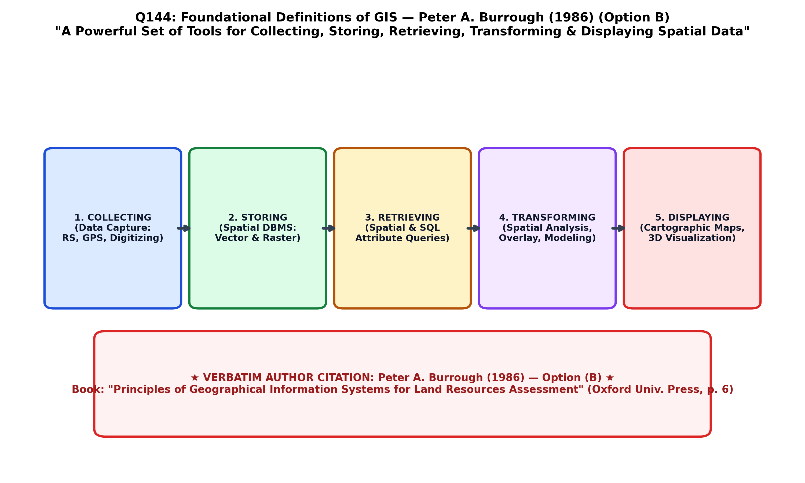

During the rapid development of computer cartography and environmental modeling in the 1980s, numerous definitions of Geographic Information Systems (GIS) emerged, categorized into toolbox-based, database-oriented, and organizational definitions. Among all academic literature, the classic, universally quoted toolbox definition was articulated by Professor Peter A. Burrough in his seminal 1986 textbook Principles of Geographical Information Systems for Land Resources Assessment (Oxford University Press, p. 6):
Burrough's definition revolutionized GIS by identifying the five indispensable functional subsystems that define any complete GIS software architecture (Burrough, 1986; Burrough & McDonnell, 1998; Chang):
| Functional Subsystem (Burrough 1986) | Core Technical Capabilities | Practical Geospatial Operations |
|---|---|---|
| 1. Collecting (Data Input & Acquisition) | Capturing real-world spatial coordinates and attributes from analog or raw sources. | Digitization of paper geological maps, GPS surveying, aerial drone photogrammetry, satellite image ingestion. |
| 2. Storing (Data Storage & Management) | Organizing spatial geometries and attribute tables in structured digital formats. | Relational geodatabases (PostGIS, Oracle Spatial), topological vector structures, multi-band raster matrices. |
| 3. Retrieving (Data Query & Retrieval) | Selective extraction of features based on spatial or attribute criteria. | SQL queries (SELECT * WHERE rock_type = 'Granite'), spatial location queries, cursor indexing. |
| 4. Transforming (Data Transformation & Analysis) | Modifying coordinates, projecting, overlaying, and analyzing spatial relationships to generate new information. | Map projections, coordinate transformation, buffering, polygon overlay, spatial interpolation (kriging), terrain slope modeling. |
| 5. Displaying (Data Output & Visualization) | Visual rendering and cartographic production of spatial data for human interpretation. | Thematic map layouts, 3D terrain draping, interactive web maps, automated report generation. |

Burrough's operational definition distinguishes a true GIS from a simple Computer-Aided Design (CAD) drafting program or computerized mapping tool: while CAD displays graphics, a GIS fundamentally includes the capacity to transform and spatially analyze geographic data to solve complex real-world environmental and geological problems.
This quotation is the verbatim classic definition formulated by Professor Peter A. Burrough in his landmark 1986 book Principles of Geographical Information Systems for Land Resources Assessment (Oxford University Press, p. 6). It is universally cited across university GIS textbooks as the definitive "toolbox" definition of a GIS.
Professor David Rhind defined GIS from an individual-organization perspective in 1989/1991 as "a computer system for capturing, storing, checking, integrating, manipulating, analysing and displaying data which are spatially referenced to the Earth", but he is not the author of the 1986 five-tool definition quoted in the question.
Professor Michael F. Goodchild is widely recognized as the father of "Geographic Information Science" (GIScience, 1992). His work focused on spatial ontology, spatial analysis, and uncertainty modeling, rather than the 1986 toolbox definition.
Lord Chorley chaired the UK Committee of Enquiry into the Handling of Geographic Information, which produced the influential Chorley Report (1987), defining GIS as "a system for capturing, storing, checking, integrating, manipulating, analysing and displaying data".
| Pioneering GIS Scholar / Institution | Year | Focus of Definition | Historical Significance |
|---|---|---|---|
| Roger Tomlinson | 1963 / 1968 | Computerized Land Resource Inventory | Created the Canada Geographic Information System (CGIS); coined the term "GIS". |
| Peter A. Burrough | 1986 | Five-Tool Operational Subsystems (Option B) | Wrote the first comprehensive academic university textbook on GIS (Oxford Press). |
| Chorley Committee (UK) | 1987 | Government & Societal Information Handling | Standardized British government adoption of digital spatial data. |
| Michael F. Goodchild | 1992 | Geographic Information Science (GIScience) | Established GIS as a scientific discipline studying spatial data structures and spatial algorithms. |
| David Rhind | 1989 / 1991 | Multidisciplinary Decision Support | Co-edited the foundational Geographical Information Systems: Principles and Applications. |